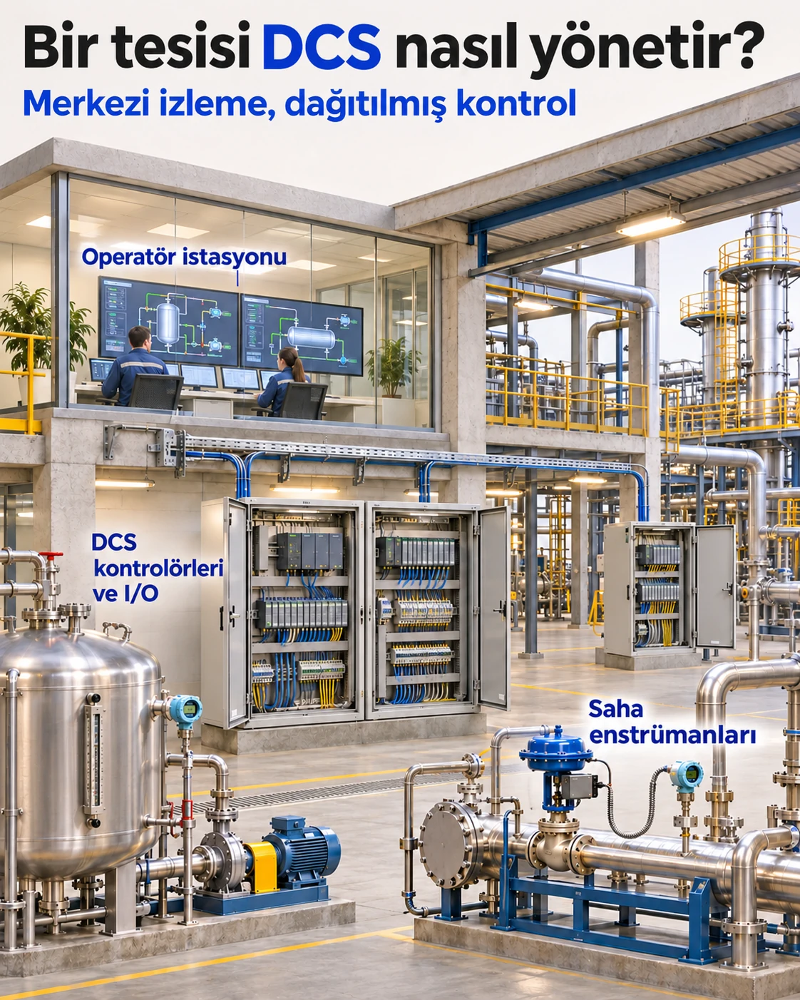

Proses otomasyonu
Bir tesisi DCS nasıl yönetir?
Sahadaki sensörden operatör ekranına uzanan kontrol zinciri, DCS ile PLC + SCADA arasındaki fark ve bir tesis için doğru platformu seçmenin ölçütleri.

DCS nedir?
Dağıtılmış Kontrol Sistemi (DCS), bir tesisin proses kontrolünü ağa bağlı birden fazla kontrolör arasında paylaştıran bütünleşik bir otomasyon mimarisidir. Örneğin, bir kontrolör depolama tanklarını yönetirken bir diğeri karıştırma hattının debi döngülerini, üçüncüsü de ısı transfer ünitesini kontrol edebilir. Operatör istasyonları, bu ünitelerin ölçümlerini ve alarmlarını ortak bir çalışma ortamında toplar.
- Saha enstrümanları ve I/O
- Transmitterler sıcaklık, basınç, seviye ve debi gibi değerleri ölçer. I/O modülleri, kontrolör ile saha cihazları arasındaki giriş ve çıkış sinyallerini taşır. I/O, mimariye göre kontrol panosunda veya sahaya yakın uzak I/O istasyonlarında yer alabilir.
- Kontrolörler ve kontrol ağı
- Kontrolörler PID döngülerini, sıralı işlemleri ve proses kilitlemelerini yürütür. Kontrol ağı, operatör istasyonları, sunucular ve kontrolörler arasında veri alışverişi sağlar.
- Operatör ve mühendislik yazılımları
- Operatörler proses ekranlarından ünitenin durumunu izler, alarmları değerlendirir ve yetkili oldukları hedef değerleri değiştirir. Mühendislik ortamında kontrol mantığı, saha sinyalleri ve operatör ekranları yapılandırılır.
Bir tankın seviyesi nasıl kontrol edilir?
Operatörün tank seviyesi için %60 hedef girdiğini düşünelim. Tank çıkışındaki tüketim artınca seviye %55'e düşüyor. Saha transmitteri ölçümü gönderiyor, kontrolör farkı hesaplıyor ve giriş vanasını daha fazla açıyor. Tanka giren debi artınca seviye yeniden hedefe yaklaşıyor. Aynı anda başka bir kontrolör, tesisteki eşanjörün sıcaklık döngüsünü yürütmeye devam edebiliyor.
- Seviye transmitteri ölçümü saha I/O modülüne iletir.
- Kontrolör, ölçümü hedef değerle karşılaştırır ve PID hesabıyla vana komutunu belirler.
- Çıkış sinyali vanaya ulaşır. Değişen debi tank seviyesini etkiler ve yeni ölçüm döngüyü tamamlar.
Operatör ekranındaki trend, seviye ile vana komutunun zaman içindeki değişimini birlikte incelemeyi sağlar. Bu görünüm, örneğin vana komutu değiştiği hâlde seviyenin neden beklenen tepkiyi vermediğini araştırırken işe yarar.
DCS ve PLC + SCADA nerede ayrışır?
PLC + SCADA mimarisinde PLC’ler kontrol mantığını yürütür. SCADA tarafı izleme, operatör kumandası, alarm ve veri kaydı işlevlerini üstlenir. Bu mimariyle de dağıtılmış kontrol ve yedeklilik kurulabilir. DCS, özellikle çok sayıda analog döngüye sahip sürekli veya kesikli proseslerde bu işlevleri ortak bir mühendislik ve işletme platformunda toplamayı kolaylaştırır.
Seçimi tesisin ölçeği kadar bakım modeli de etkiler. Bağımsız makinelerin ağırlıkta olduğu bir tesiste paket makineler kendi PLC’leriyle çalışabilir. Proses ünitelerinin yoğun biçimde birbirine bağlı olduğu tesiste ortak alarm yaklaşımı, standart operatör ekranları ve kontrol yapılandırması daha fazla değer kazanabilir. Bir tesiste iki mimari birlikte de kullanılabilir.
DCS projesi sahada nasıl devreye alınır?
Örnek bir proses tesisinde hammadde tanklarını, karıştırma ünitesini ve ısı transfer hattını düşünelim. Mühendislik ekibi ilk olarak P&ID üzerinden hangi ölçümün hangi kontrolöre gideceğini, hangi vanayı etkilediğini ve operatör ekranında nerede gösterileceğini belirler. Örneğin, tank seviyesinin pompayı durdurması gerekiyorsa iki ünite arasındaki kilitleme mantığı tasarım aşamasında açıkça tanımlanır.
Fabrika kabul testinde (FAT) saha sinyalleri simüle edilir. Ekip, düşük seviye alarmının tetiklenmesini, ilgili trendin görüntülenmesini ve kontrol mantığının beklenen tepkiyi vermesini doğrular. Yedeklilik tasarlandıysa, kabul senaryolarına hangi bileşenin devre dışı bırakılacağı ve yedeğin hangi koşullarda devralacağı da yazılır.
Saha kabul testinde (SAT) transmitterden I/O modülüne ve operatör ekranına kadar gerçek sinyal zinciri doğrulanır. Çıkış tarafında kontrolör komutunun doğru vanaya ulaştığı ve varsa vana konum geri bildiriminin ekranda gösterildiği kontrol edilir. Mevcut bir tesiste geçiş sırası, duruş penceresi ve geri dönüş kararının verileceği nokta devreye alma planına eklenir.
DCS seçerken neye bakılır?
| Ölçüt | Şartnameye girecek soru |
|---|---|
| Proses kapsamı | Kaç I/O noktası ve kontrol döngüsü var? Sürekli kontrol, reçete, sıralı çalışma ve kapasite artışı nasıl karşılanacak? |
| Yedeklilik | Kontrolör, ağ veya sunucu arızasında prosesin kabul edebileceği davranış nedir? Yedek devralma nasıl test edilecek? |
| Operatör deneyimi | Bir arıza sırasında alarm önceliği, olay sırası ve ilgili trendler operatöre nasıl gösterilecek? |
| Entegrasyon | Mevcut paket makineler, sürücüler, saha cihazları ve üst seviye sistemlerle hangi veriler alışverişe girecek? |
| Yaşam döngüsü | Yerel servis, yedek parça, lisans, sürüm yönetimi ve güvenlik güncellemelerinin uzun vadeli koşulları neler? |
| Modernizasyon | Geçiş için ne kadar duruş ayrılabilir? Fabrika ve saha kabul testleri ile geri dönüş planı nasıl hazırlanacak? |
Emerson DeltaV, Yokogawa CENTUM ve Honeywell Experion PKS, dünya pazarında öne çıkan platformlardan bazılarıdır. Teklifleri karşılaştırırken aynı proses senaryosunu ve aynı kabul testlerini kullanmak, ürün listesinden daha somut bir karşılaştırma sağlar.
Güncel eğilimler · Yazılım tanımlı kontrol ve kalite tahmini
Yazılım tanımlı otomasyon, kontrol yazılımının donanımla bağını azaltmayı ve sistemleri kademeli olarak yenilemeyi hedefliyor. Schneider Electric’in Foxboro SDA yaklaşımı buna bir örnek. Projede bunun karşılığını görmek için hangi bileşenlerin taşınabildiği, mevcut saha cihazlarının nasıl korunacağı ve geçişin ne kadar duruş gerektirdiği netleştirilmeli.
Yokogawa’nın CENTUM R7.02 sürümünde sunduğu tahmin işlevi, mevcut proses verilerinden ürün kalitesi ve çalışma koşulları hakkında tahmin üretmeyi amaçlıyor. Örneğin bir karıştırma prosesinde sıcaklık, debi ve karıştırma süresi kullanılarak ürün viskozitesindeki olası sapma tahmin edilebilir. Kabul testinde tahminin laboratuvar ölçümleriyle ne kadar uyuştuğu, sapmayı ne kadar erken işaret ettiği ve kaç yanlış uyarı ürettiği değerlendirilebilir.
Bir DCS yatırımının teknik karşılığı, normal üretimin yanında arıza, bakım ve modernizasyon sırasında prosesin nasıl davranacağının baştan tanımlanması ve kabul testlerinde doğrulanmasıdır.